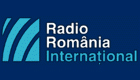

Argentina
Actualidad DX e Suplemento de Actualidade DX (em espanhol) é um programa especial de rádio de língua espanhola preparado e apresentado por
Arnaldo Slaen e Luis Maria Barassi, difundido pela RAE, Argentina para o Mundo sempre aos sábados, que é dedicado em especial aos amigos Dexistas no mundo,
com notícias sobre ondas curtas e do mundo das telecomunicações.
RAE Argentina Al Mundo, Apartado Postal 555 - Código Postal C1000WAS - Buenos Aires - Argentina
E-mail: actualidaddx.com.ar@gmail.com, slaen@ciudad.com.ar
Brasil
Rádio Aparecida
Programa Encontro DX (em português) único do gênero, voltado para os rádios-escutas, que tem como hobby ouvir rádio de longo alcance. O programa tem na sua produção e apresentação Cassiano Macedo e Jota Moura. A Rádio Aparecida por causa disso é conhecida mundialmente e pode ser sintonizada em mais de 100 países.
Freqüências: 820, 5035, 6135, 9630, 11855 kHz - Horários: Sábados 19 horas, horário de Brasília.
Rádio Aparecida - Caixa Postal 02
CEP: 12570-970 - Aparecida - SP - Brasil
E-mail: cassianoma@yahoo.com.br / luis.oliveira@radioaparecida.com.br / encontrodx@gmail.com
Rádio Transmundial
Amigos do Rádio (em português), a Radio Transmundial apresenta o Programa Amigos do Rádio com informações destinada a Radioescutas, Dexistas e Radioamadores. Apresentação e Produção: Carlos Felipe.
Quartas-feiras - 4h, Sábados - 04h15m e 23h30m, Domingos - 16h15m e 20h30m, nas faixas e frequências de: 49 metros em 5.965 kHz, na Faixa
de 31 metros – 9.530 kHz e na Faixa de 25 metros - 11.735 kHz.
Rádio Transmundial - Caixa Postal, 18300 - 04626-970 - São Paulo - SP - Brasil
E-mail: amigosdoradio@transmundial.com.br
Cuba
En Contacto (em espanhol) é um programa dedicado aos ouvintes de ondas curtas, Dexistas e Radioamadores,
apresentado por Manolo de la Rosa, com a realização periódica de intervenção de Norberto Hernandez. O programa vai ao ar sempre aos domingos.
Radio Havana Cuba
Programa - Código Postal 6240 – Havana - Cuba
E-mail: radiohc@enet.cu
Japão
Noticiero Dxista (em espanhol) da NHK World Radio Japão é um programa DX que pode ser escutado aos domingos dentro do programa "Buzón de Radio Japón". É um espaço de encontro entre os ouvintes da Rádio Japão.
NHK World Radio Japón
- 2-2-1 Jinnan - Shibuya-ku, 150-8001 - Tokio - Japão.
E-mail: clique aqui
Romênia
Rincón Diexista (em espanhol)
é um programa semanal produzido por Victoria Sepciu para a Rádio Romênia Internacional, onde
faz uma habitual leitura das cartas recebidas dos ouvintes e noticias sobre a escuta de emissoras de onda curta.
Emite aos Domingos por onda curta e Internet.
Rádio Romênia Internacional
- Calle General Berthelot,nr. 60-64, sector 1, Bucarest - Rumania, PO Box 111, código postal 010165
E-mail: span@rri.ro | Victoria Sepciu (victoria_sepciu@yahoo.es)